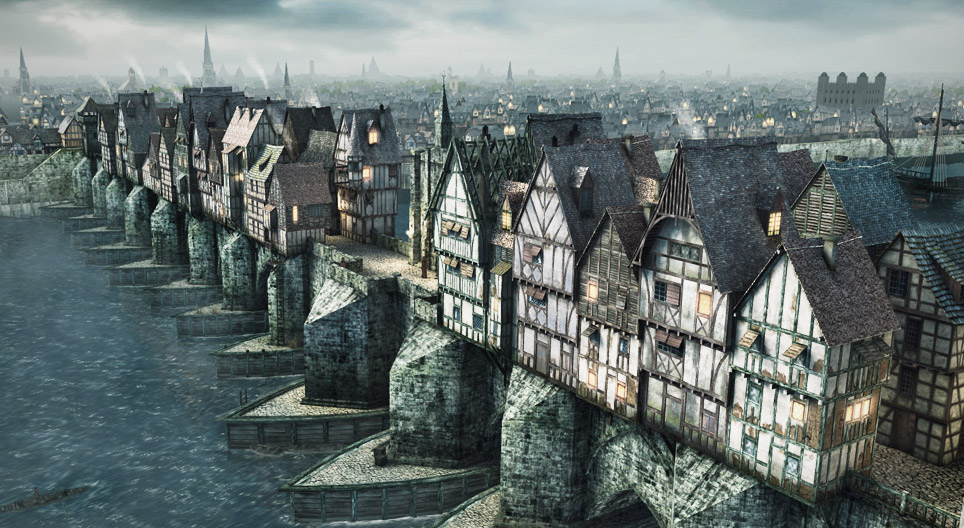

Робинзон Крузо обича морето от ранна детска възраст. Иска да стане моряк, но родителите му не са съгласни с това негово решение и настояват да остане в Лондон и да се посвети на адвокатска кариера. Въпреки забраната Робинзон Крузо решава да пътува до Африка на кораб. На 1 септември 1659 г. корабът отплава от бреговете на Великобритания. На двайсетия ден от пътуването, след като пресича екватора, корабът попада в буря и засяда. Екипът се качва на лодката, но и тя потъва. Робинзон Крузо е единственият, който успява да избяга от смъртта. В началото той се радва, после скърби за загиналите другари. Героят прекарва нощта на полегнало дърво.